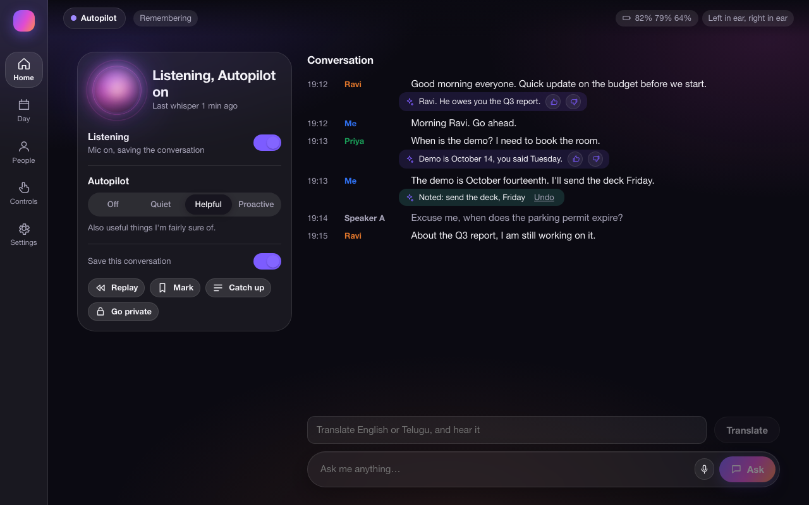
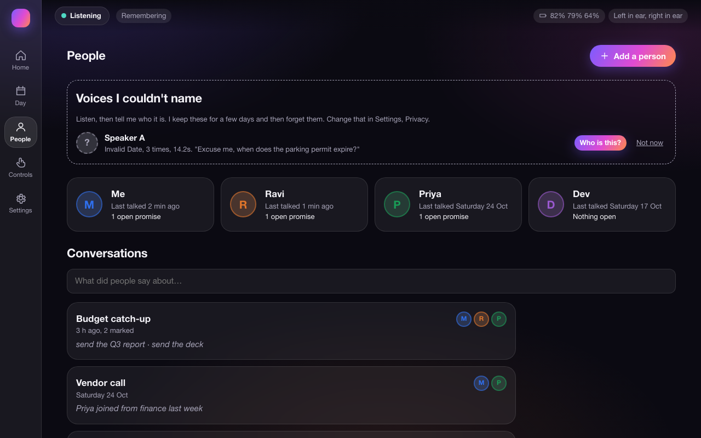
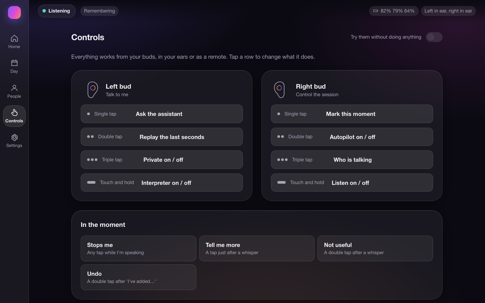

A private assistant in your ear
It listens, knows who is speaking, remembers what they said, whispers help at the right moment and translates Telugu and English. Everything runs on your Mac.
Try the live demoDownload for MacMac app, not signed by Apple: after downloading, open System Settings, Privacy & Security and click Open Anyway the first time. Needs Ollama.
Two minutes
Listen, who is talking, Ask, an Autopilot whisper, and Telugu to English.
A 2-minute screen recording will appear here.



What it does
Built for Galaxy Buds FE on a MacBook. No account, no cloud.
Listen
Live transcript with a name on every line, and a rolling replay so you never miss "what did they just say?"
Who is talking
Voice identity from a few seconds of enrolment. Unknown voices are never stored.
Ask
Questions answered from your own calendar, to-dos and what people actually said, with the source line.
Autopilot
A short whisper when it helps: your promises noted, a stored commitment, a name briefed. Every whisper and every silence has a reason.
Translate
English and Telugu, typed or spoken, with a Telugu voice. Live voice-to-voice translation is experimental.
Private by design
One tap to go private: the mic closes and nothing is kept.
Results
Measured on a MacBook Air M3 (16 GB). Synthetic voices are a floor, not real people; rows say which is which.
Speaker identification (equal error rate, lower is better)
| Model | Clean enrolment only | Clean + buds-like enrolment |
|---|---|---|
| WeSpeaker ResNet34 | 29.3% | 7.1% |
| WeSpeaker ResNet293 | 42.5% | 9.3% |
| 3D-Speaker CAM++ | 34.1% | 28.8% |
| NeMo TitaNet-small (used) | 12.4% | 2.0% |
Latency, end of speech to start of the answer
| Path | Median | Runs |
|---|---|---|
| … | ||
Full method and caveats in the report. Speaker accuracy on real people and Telugu from real speakers are still being measured.
Privacy: everything runs locally
- Speech recognition, voice identity, memory and the language models all run on your Mac. There is no account and no cloud service.
- The dashboard only accepts requests from your own computer.
- Unknown voices are never saved; Telugu transcripts are never saved; Translate keeps nothing; Go private closes the mic and wipes the replay buffer.
- Forget a person and their voiceprint, transcripts, audio and facts are deleted, with exact counts shown.
- Not done yet: encryption at rest (files are protected by your macOS account only).
For developers: install from the terminal
This path installs straight from GitHub, so it only works once the repository is public. Most people should use the Mac download above.
macOS 13 or later on Apple silicon, 16 GB of memory, Python 3.11+. Galaxy Buds are optional: try it with --simulate.
# 1. Get Ollama (the local language models): https://ollama.com/download
# 2. Install Buds Sidekick
brew install pipx && pipx ensurepath
pipx install "git+https://github.com/agentsc07/buds-sidekick.git"
# 3. Download the models (once, a few GB) and check everything
buds-sidekick setup
# 4. Run: no buds needed with --simulate
buds-sidekick --simulate
# then open http://127.0.0.1:8770With buds: turn Bluetooth off on your phone first (the buds talk to one device), connect them to the Mac, then run buds-sidekick.
For developers: how it is built
How it works
Audio goes in, is understood on-device, and the answer comes back as a whisper. Nothing leaves the Mac.
Models: NeMo TitaNet (speaker), faster-whisper small.en and a Telugu Whisper (speech), Gemma 4 12B via Ollama (answers, judgement, translation).